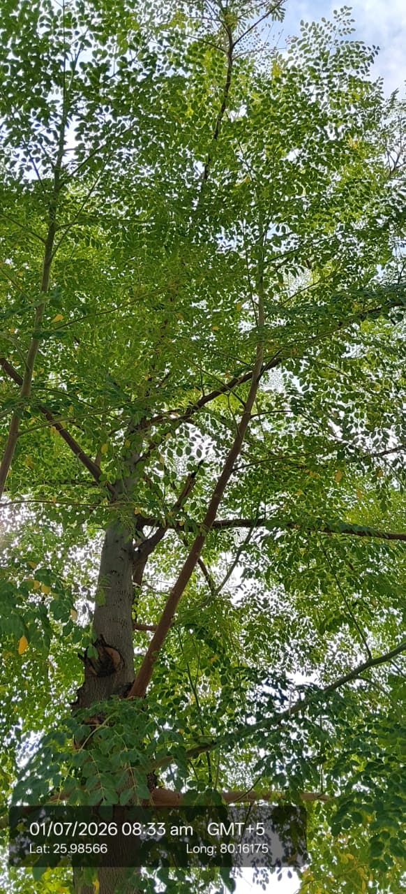

Visual record04 photographs



| Scientific name | Moringa oleifera Lam. |
|---|---|
| Type | Tree |
| Category | Trees |
Habitat & Growing Conditions
- Common in tropical and subtropical regions, roadsides, farms, gardens, and wastelands. It grows well in dry, well-drained soils.
Economic Importance
- Moringa is a fast-growing deciduous tree belonging to the family Moringaceae.
- Its leaves are highly nutritious and rich in vitamins A, C, calcium, iron, and protein.
- The immature pods (drumsticks) are widely used as a vegetable.
- Seeds yield edible oil and are also used for water purification.
- Leaves, bark, flowers, and roots are used in Ayurvedic and traditional medicine.
- It is used as nutritious fodder for livestock.
- The tree is drought-tolerant and grows well in poor soils.
- It helps improve soil fertility and provides shade.
- Moringa is cultivated commercially for food, medicine, and oil production.
- It has high nutritional, medicinal, ecological, and economic importance.
Medicinal Importance
Medicinal notes pending.